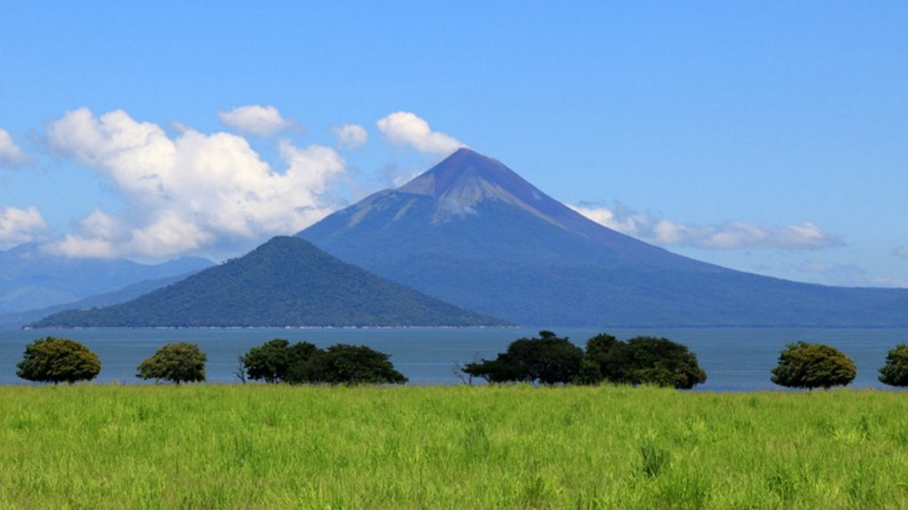
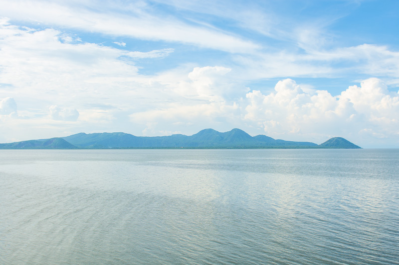
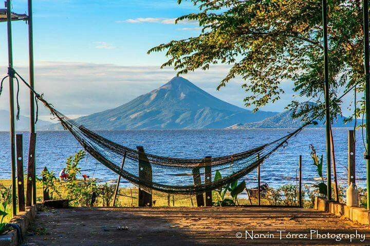

Fuente de vida
El Lago Xolotlán, conocido también como Lago de Managua, es el segundo lago más grande de Nicaragua. Se considera una fuente vital de vida, ya que abastece de agua, recursos pesqueros y alberga una gran biodiversidad. Además, tiene un valor cultural e histórico importante para las comunidades que viven en sus orillas.

Problemas actuales
El Lago Xolotlán enfrenta serios problemas ambientales debido a la contaminación por aguas residuales, metales pesados y químicos. Esta situación afecta su biodiversidad, pone en riesgo la salud de las comunidades cercanas y limita las actividades recreativas y económicas que dependen del lago.

Nuestra misión
Nuestra misión es fomentar la participación activa de la comunidad en la protección del medio ambiente, promoviendo limpiezas, educación ambiental y el desarrollo de proyectos sostenibles que contribuyan al cuidado y conservación de nuestros recursos naturales.